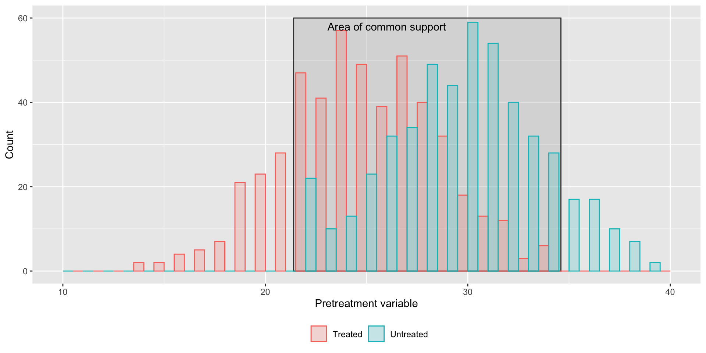

Propensity score matching
HDAT9700 Statistical Modelling II
Big picture
Focus is on causal inference from observation data
- Research questions like Which drug works better to reduce blood pressure, A or B?
- Datasets like survey data, linked administrative data
Last week
- DAGs help us to identify important control variables
This week
- How do we control for these variables?
- What assumptions need to be met for this to be valid
Outline
Part 1 Theoretical background
Part 2 Matching
Part 3 Matching in R
Part 1. Theoretical background

We know these are spurious correlations. Why?
The Bradford Hill criteria
How in the first place do we detect this relationship between sickness, injury and conditions of work?
The Bradford-Hill criteria are a set of nine principles used to establish evidence of a causal relationship
Hill AB. The environment and disease: association or causation? Proc of the Royal Society of Medicine. 1965;58(5)
- Strength (effect size)
- Consistency (reproducibility)
- Specificity
- Temporality
- Biological gradient (dose–response relationship)
- Plausibility
- Coherence
- Experiment
- Analogy
Potential outcomes framework
If an hour ago I had taken two aspirins instead of just a glass of water, my headache would now be gone
The potential outcomes framework provides a way to estimate causal effects.
It’s origins predate the Bradfard-Hill criteria, but it has come to the fore in more recent decades.
Rubin DB. Estimating causal effects of treatments in randomized and nonrandomized studies. Journal of Educational Psychology. 1974;66(5).
Two possible treatments: 🚰 or 💊
Two potential outcomes
🚰 ➡️ 😞
💊 ➡️ 😃
What works best, 🚰 or 💊?
Estimate of causal effect is the difference in the two potential outcomes, 😃-😞
Potential outcomes framework
What we would like
| Person | Treatment | Outcome given 🚰 | Outcome given 💊 |
|---|---|---|---|
| Bilal | 🚰 | 😠| 😃 |
| Noor | 🚰 | 😃 | 😃 |
| Anne | 🚰 | 😠| 😠|
| Fintan | 💊 | 😠| 😃 |
| Bich | 💊 | 😠| 😠|
| Sara | 💊 | 😠| 😃 |
- What works best, water or aspirin?
Potential outcomes framework
What we get to see in real life
| Person | Treatment | Outcome given 🚰 | Outcome given 💊 |
|---|---|---|---|
| Bilal | 🚰 | 😠| |
| Noor | 🚰 | 😃 | |
| Anne | 🚰 | 😠| |
| Fintan | 💊 | 😃 | |
| Bich | 💊 | 😠| |
| Sara | 💊 | 😃 |
- What works best, water or aspirin?
- “The fundamental problem of causal inference”
Identifiability assumptions
Where we’re going we don’t need roads need assumptions
- Positivity
Every type of person has the chance to get the treatment
- Exchangeability
Background characteristics are balanced in treated and control groups
- Consistency
There is a single well-defined version of the treatment
Positivity
Every type of person has the chance to get the treatment
Positivity
Every type of person has the chance to get the treatment
Treatment 🚰
🧒
👧
👶
👲
Treatment 💊
👴
🧓
👵
👨‍🦳
Positivity does not hold ❌
Children always get water 🚰
Elderly always get aspirin 💊
Positivity
Every type of person has the chance to get the treatment
Treatment 🚰
🧒
👨‍🦳
👶
👴
Treatment 💊
👲
🧓
👵
👧
Positivity does hold ✅
At least some children get aspirin 💊
At least some elderly get water 🚰
Exchangeability
Background characteristics are balanced in treated and control groups
Exchangeability
Background characteristics are balanced in treated and control groups
Treatment 🚰
⛹️
🏋
🏃️
🤸️
🧖
Treatment 💊
🤾️
⛷️
🛀
👨‍💻️
🛌
Exchangeability does not hold ❌
- Water 🚰 group dominated by highly active
Exchangeability
Background characteristics are balanced in treated and control groups
Treatment 🚰
⛹️
👨‍💻
🏃️
🤸️
🧖
Treatment 💊
🤾️
⛷️
🛀
🏋️
🛌
Exchangeability does hold ✅
- Active individuals balanced in Water 🚰 group and aspirin 💊 group
Exchangeability
Background characteristics are balanced in treated and control groups
Treatment 💊
⛹️
👨‍💻
🏃️
🤸️
🧖
Treatment 🚰
🤾️
⛷️
🛀
🏋️
🛌
Exchangeability does hold ✅
- The exchangeable bit is the treatment assignment
How does this tie in with DAGs?
- Activity level affects exposure (Active people more likely to just take water for headache)
- Activity level affects outcome (Active people more likely to feel better quickly)
- There is an open backdoor path between the treatment and exposure
- We must close this backdoor path to estimate the treatment effect
Consistency
There is a single well-defined version of the treatment
Consistency
There is a single well-defined version of the treatment
Treatment 🚰
⛹️🚰
👨‍💻🚰
🏃️🚰🚰🚰
🤸️🚰
🧖🚰🚰
Treatment 💊
🤾️💊💊
⛷️💊
🛀💊
🏋💊💊💊️
🛌💊
Consistency does not hold ❌
- Some people take 2 or 3 glasses of water
- Some people take more than 1 aspirin
Consistency
There is a single well-defined version of the treatment
Treatment 🚰
⛹️🚰
👨‍💻🚰
🏃️🚰
🤸️🚰
🧖🚰
Treatment 💊
🤾️💊
⛷️💊
🛀💊
🏋💊️
🛌💊
Consistency does hold ✅
- The treatment is always the same
Discussion
What are the implications for positivity, exchangeability and consistency for data from
- A randomised control trial?
- Observational data?
Part 2. Matching
So how do we “control†for a confounder Z?
1. Stratify by Z
e.g. Z = activity level
| Activity = High | Activity = Low |
|---|---|
| Y ~ X | Activity=High | Y ~ X | Activity=Low |
lm(y ~ x, data = df[df$activity=="high", ]) |
m(y ~ x, data = df[df$activity=="low"], ) |
| Y = 3.1 + 2.1X | Y = 3.2 + 2.8X |
- Useful if effect of X changes for different values of Z (effect modification)
- Impractical when a lot of categories or several Z variables
So how do we “control†for a confounder Z?
2. Include Z as a regression covariate
Convenient, versatile, widely understood
| Y ~ X + Z |
lm(y ~ x, data = df) |
| Y = 3.1 + 2.1X + 0.5Z |
BUT need to decide how to specify the model!
\[ \begin{align*} \text{Linear} \qquad & Y = \beta_0 + {\color{Red} {\beta_{1}}}X + \beta_2 Z \\ \text{Quadratic} \qquad & Y = \beta_0 + {\color{Green} {\beta_{1}}}X + \beta_2 Z + \beta_3 Z^2 \\ \text{Interaction} \qquad & Y = \beta_0 + {\color{Blue} {\beta_{1}}}X + \beta_2 Z_1 + \beta_3 Z_2 + \beta_4 Z_1Z_2 \\ \end{align*} \]
\({\color{Red} {\beta_{1}}} \ne {\color{Green} {\beta_{1}}} \ne {\color{Blue} {\beta_{1}}}\)
Model dependency! The estimate depends on the model specification
So how do we “control†for a confounder Z?
3. Matching
- Aim is to balance Z variables in exposed/unexposed
- Emulates randomisation
- A preprocessing technique (match first then analyse)
- Removes model dependency and researcher discretion
Types of Matching
- Exact Matching
- Coarsened exact matching
- Distance-based matching
- Mahalanobis distance
- Propensity score
Exact matching
For each individual, find an exact match in the data
Pros
- Simple and easy to communicate
Cons
- Hard to find exact matched especially as number of variables grow
Exact matching

Exact matching
Coarsened exact matching
- Coarsen data
- Match within strata
- Drop strata with no treatment or control
- Weight remaining observations to balance treated and controls within strata
Coarsened exact matching
Coarsened exact matching
Coarsened exact matching

Coarsened exact matching
Coarsened exact matching
Coarsened exact matching
Pros
- Makes better use of available data
Cons
- Degree of coarsening is arbitrary
- More coarsening means worse matches
Distance-based matching
Use the “distance†between to individuals to match
- Mahalanobis distance
- Propensity score distance
Ratio (1:N matches)
Calipers
Mahalanobis distance
\[ \text{d}(X_i, X_j) = \sqrt{(X_i-X_j)^TS^{-1}(X_i-X_j)} \]
- \(X_{i}\) is a vector of responses for person \(i\)
- \(S\) is the sample variance-covariance matrix of \(X\)
Mahalanobis distance

- Consider the distance from the points a and b to the centre of the data.
- The Euclidean distance is about the same but a better reflects the covariance between the variables
Mahalanobis distance
- Now let’s multiple by \(S^{-1}\)
Mahalanobis distance

Mahalanobis distance
Mahalanobis distance
Mahalanobis distance
Pros
- Standardises variables
- Accounts for covariance structure
- Emulates a fully blocked randomised experiment
Cons
- Doesn’t handle categorical variables well
Propensity score distance
\[ \begin{align*} \text{d}(X_i, X_j) &= \hat{\pi_i}-\hat{\pi_j} \\ \text{where} \\ \hat{\pi_i} &= \text{P}(\text{Treatment=1}) \\ &=\text{Probability of receiving treatment/exposure} \end{align*} \]
- \(\pi_i\) is typically often estimated using logistic regression (but could be any method)
- Projects many variables onto one metric
- Emulates a completely randomised control experiment
Propensity score distance
Pros
- Highly flexible & works with diverse variable types
- Reduces many variables into a single variable
Cons
- Ignores local information
Matching workflow
Diagnostics
Common support
Diagnostics
Covariate balance before and after matching (tabulated)
Lee WS, Propensity score matching and variations on the balance test. Emp Econ 2013, 44
Diagnostics
Covariate balance before and after matching (visualised)
aka a love plot ❤️
Winger et al Propensity-score analysis in thoracic surgery: When, why, and an introduction to how. JTCS 2016 151(6)
Summary
Three identifiability conditions allow us to make causal claims from observational data
- Positivity
- Exchangeability
- Consistency
In a well-designed RCT, these assumptions are plausible
For observational data we have to adjust the analysis to make these more plausible
Matching allows us to find an RCT ‘hidden’ in observational data
- Balances data before modelling, removing model dependency
- Propensity score matching: a simple randomised control trial
- Other types of matching: a fully blocked randomised trial
Check common support (positivity assumption) and covariate balance (exchangeability assumption)
Part 3. Matching in R

© UNSW 2022